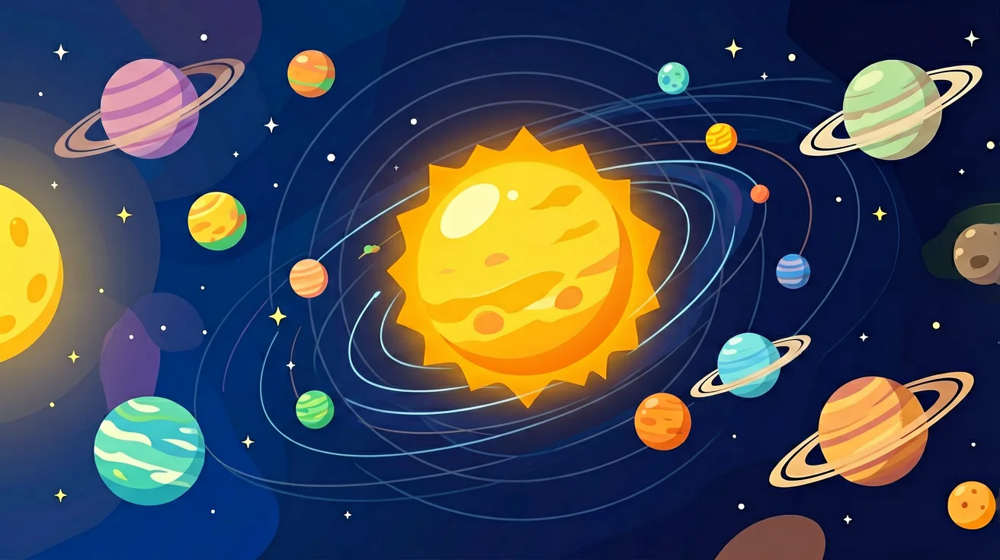
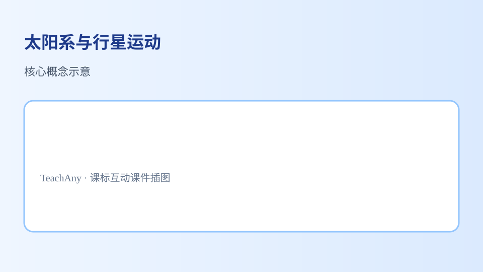

太阳系与行星运动
太阳是中心，八大行星绕它公转——从水星到海王星，每个世界都有独特的故事。

Problem Anchor
今天你最想弄懂哪个问题？
选择或输入后，这节课会围绕你的问题展开。
Objectives
学习目标
- 能按距离太阳远近说出太阳系八大行星名称
- 能描述行星绕太阳公转、月球绕地球公转的基本特征
- 能初步解释引力与运动速度如何维持轨道
- 能区分行星、卫星、小行星、彗星等基本概念
Pretest
课前小诊断
太阳系中体积和质量最大的是？
先选一个，错了正好暴露你的前概念，我们一起纠正。
Concept
太阳系里有什么？
太阳系以太阳为中心，包括八大行星（水金地火木土天海）、矮行星、小行星带、彗星等。内侧四颗是类地行星，外侧四颗是气态巨行星。
行星本身不发光，反射太阳光；多数行星有卫星，如地球有月球。各行星轨道近似圆形，在同一平面附近绕日公转。

Examples
为什么行星能绕太阳转？
太阳质量巨大，产生引力拉住行星。行星若只有引力会坠向太阳；实际上它有切向速度，引力提供向心力，形成稳定公转轨道。
地球公转一周约一年，自转一周约一天，形成昼夜与四季。可用模型或模拟观察轨道与速度关系。

🔬 PhET 模拟
引力与轨道
在模拟中调节太阳、地球质量与运动速度，观察引力如何使行星保持绕日轨道。
💡 试试把地球速度调慢或调快，看轨道如何变扁或变圆。
Interactive
排顺序：八大行星距太阳由近到远
把行星卡片拖到正确顺序位（1最近→4，再拖后四颗）。
☿ 水星
♀ 金星
🌍 地球
♂ 火星
♃ 木星
♄ 土星
♅ 天王星
♆ 海王星
第1近
第2近
第3近
第4近
第5近
第6近
第7近
第8近
排完 8 颗行星后自动判分。
Posttest
达标检测
行星能稳定绕太阳公转，主要是因为？
选一个并查看反馈。
Summary
这节课我们学会了
1
太阳系以太阳为中心，含八大行星及卫星、小行星等。
2
行星按水金地火木土天海由近及远排列。
3
引力与运动速度共同维持公转轨道。
迁移任务：用直径不同的球做太阳系模型，按比例（可压缩）标出行星顺序。